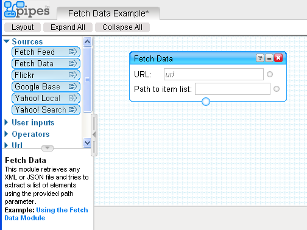
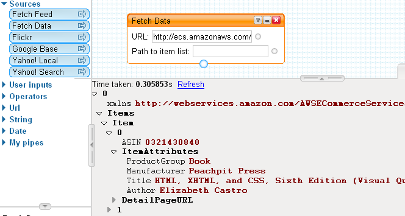

No time to play with this just at the mo, but worth reporting I think... A new block has appeared at Yahoo Pipes:
Fetch Data
This module retrieves any XML or JSON file and tries to extract a list of elements using the provided path parameter.

The example pipe is empty at the moment: http://pipes.yahoo.com/pipes/XsuoOujc2xG2GpwezKky6g/ (21:34, 29/3/07)
However, see a working example here: OPML RSS links 2 RSS: "Aggregates all the RSS feeds listed in an online OPML file into a single feed. The title of every item in the aggregated feed is modified to include the title of its source feed. The newest items will appear first in the aggregated feed, and the maximum number of items may be specified (the default is 200). This Pipe! utilizes the new "Fetch Data" source."
There's also another really interesting block listed in the Complete List of Pipes:
Web Service
This module posts XML or JSON to an outside REST web service and tries to parse the results.
So what? So - we can now get arbitrary XML into a pipe with the Fetch Data block, and soon will presumably be able to make complex XML calls to third party webservices.
For example, let's call an Amazon web service (creating the call URL using the AWS Scratchpad, for example):

All we need now is the ability to output arbitrary XML... in the meantime, the Rename module "lets you rename or copy item attributes." Which is a start...
Posted by ajh59 at March 29, 2007 09:44 PM